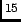
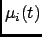
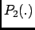
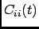
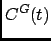
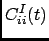
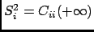
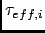

Next: Parameters
Up: Order Parameter
Previous: Order Parameter
Contents
Theory and implementation
Adequate and accurate cross comparison of the NMR and MD simulation data is of crucial importance in versatile studies
conformational dynamics of proteins. NMR relaxation spectroscopy has proven to be a unique approach for a site-specific
investigation of both global tumbling and internal motions of proteins. The molecular motions modulate the magnetic
interactions between the nuclear spins and lead for each nuclear spin to a relaxation behavior which reflects its environment.
Since its first applications to the study of protein dynamics, a wide variety of experiments has been proposed to
investigate backbone as well as side chain dynamics. Among them, the heteronuclear relaxation measurement of amide
backbone N nuclei is one of the most widespread techniques. The relationship between microscopic motions and measured
spin relaxation rates is given by Redfield's theory [70]. Under the hypothesis that N relaxation occurs through
dipole-dipole interactions with the directly bonded H atom and chemical shift anisotropy (CSA), and assuming that the
tensor describing the CSA is axially symmetric with its axis parallel to the N-H bond, the relaxation rates of the N
nuclei are determined by a time correlation function,
which describes the dynamics of a unit vector  pointing along the N-H bond of the residue i in the laboratory
frame. Here  is the second order Legendre polynomial.
The Redfield theory shows that relaxation measurements probe the relaxation dynamics of a selected nuclear spin only at a
few frequencies. Moreover, only a limited number of independent observables are accessible. Hence, to relate relaxation
data to protein dynamics one has to postulate either a dynamical model for molecular motions or a functional form
for , yet depending on a limited number of adjustable parameters.
Usually, the tumbling motion of proteins in solution is assumed isotropic and uncorrelated with the internal motions,
such that:
where  and  denote the global and the internal time correlation function, respectively. Within
the so-called model free approach [71,72] the internal correlation function is modeled by an
exponential,
Here the asymptotic value
 is the so-called generalized order parameter, which indicates the
degree of spatial restriction of the internal motions of a bond vector, while the characteristic time  is an
effective correlation time, setting the time scale of the internal relaxation processes.  can adopt values ranging from
0 (completely disordered) to 1 (fully ordered). So, is the appropriate indicator of protein backbone motions in
computationally feasible timescales as it describes the spatial aspects of the reorientational motion of N-H peptidic
bonds vector.
can adopt values ranging from
0 (completely disordered) to 1 (fully ordered). So, is the appropriate indicator of protein backbone motions in
computationally feasible timescales as it describes the spatial aspects of the reorientational motion of N-H peptidic
bonds vector.
When performing Order Parameter analysis, nMOLDYN computes for each residue i both and .
It also computes a correlation function averaged over all the selected bondsdefined as:
where  is the number of selected bonds for the analysis.
is the number of selected bonds for the analysis.
Next: Parameters
Up: Order Parameter
Previous: Order Parameter
Contents
pellegrini eric
2009-10-06